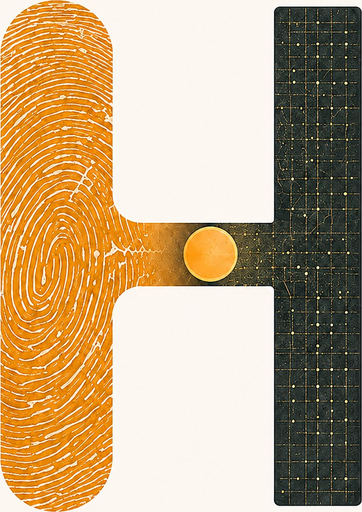

Purpose
Help people understand why human flourishing matters with AI.
HumAIne Movement
A serious, warm, signable design system for a global movement centered on human flourishing with AI.

HumAIne refuses the false choice between embracing AI and staying human. The visual language should feel tactile, grounded, and movement-led rather than sterile, futuristic, or fear-led.
Help people understand why human flourishing matters with AI.
Make the manifesto feel serious, human, and signable.
Turn passive agreement into visible signatures, messages, and community.
Each color has a job: parchment for trust, slate for the weight of the digital era, and four value colors for the manifesto.
#F4F1EA
#2F353B
#E6A532
#2D5A27
#A35C44
#D4908B
Nunito carries the accessible, human UI. Georgia gives the manifesto its editorial weight. Caveat is reserved for signature and handwriting moments.
Using AI should not make people less human.
Body copy should be plain, calm, and readable. The brand can be ambitious without sounding like AI hype or anti-AI panic.
Use these four values as semantic anchors across the site. Color can help, but the labels and contrast statements should remain visible without color.
We refuse the false choice: embracing AI and staying deeply human are part of the same goal.
Components should make joining the movement feel clear and grounded. Primary actions use terracotta; resource actions use simple verb labels.
Use for "Read the Manifesto", "Sign the Manifesto", and "Join the Movement".
The first release centers on a landing page and manifesto page. Future surfaces can add about, messages, and resources without changing the core system.
Why, what, manifesto preview, founding members, join movement.
Values, principles, sign form, signature wall, message board.
About, messages, resources, and community participation.